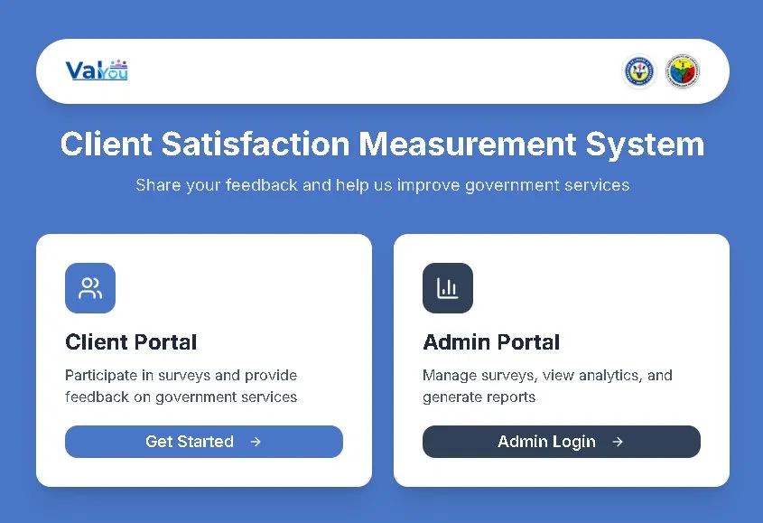

ValYOU
01- Role
- Documentation Lead
- Focus
- WebApp / Documentation / ARTA
A web application designed to automate an ARTA-compliant Customer Satisfaction Survey system. Managed the full documentation process including process flows, compliance records, and design assets using Google Docs, Excel, and Canva.
Project details
Faced with complex Anti-Red Tape Authority (ARTA) compliance requirements for citizen feedback, led the structured documentation architecture—translating regulatory mandates into clear process flows, data schemas, and accessible UI assets.
Visit Web App ↗